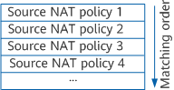

The source NAT function can be implemented by configuring a NAT policy that consists of post-NAT addresses (addresses in an address pool or outbound interface addresses), matching conditions, and actions.
Matching conditions include the source address, destination address, source security zone, destination security zone, outbound interface, service, and time range. You can configure different matching conditions to perform NAT translation on the traffic matching these conditions.
If multiple NAT policies are created, the device matches traffic against these policies in top-down order, and stops matching once a match is found. A newly added policy or a policy with the NAT action modified is placed at the end of the NAT policy list. You can adjust the matching order of NAT policies as required. For example, source NAT policy 2 can be placed above source NAT policy 1.
